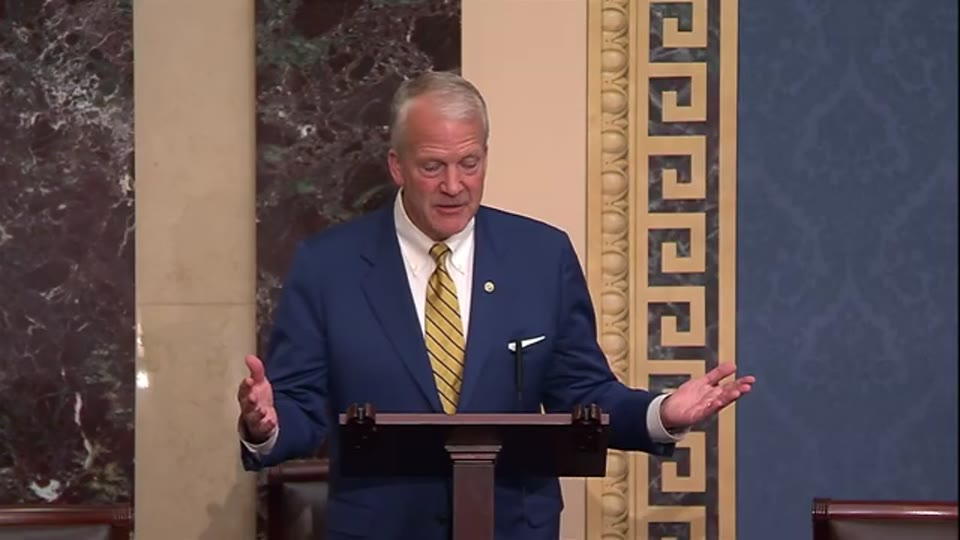
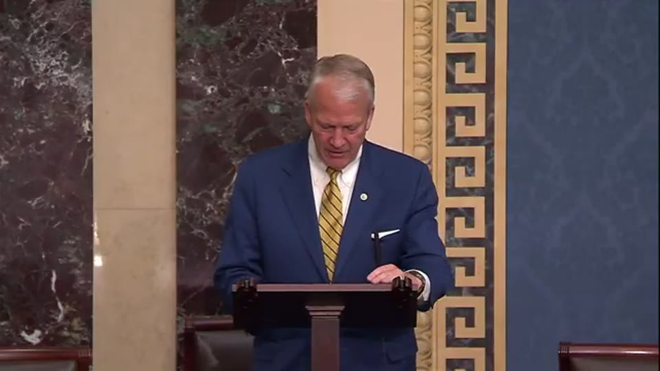
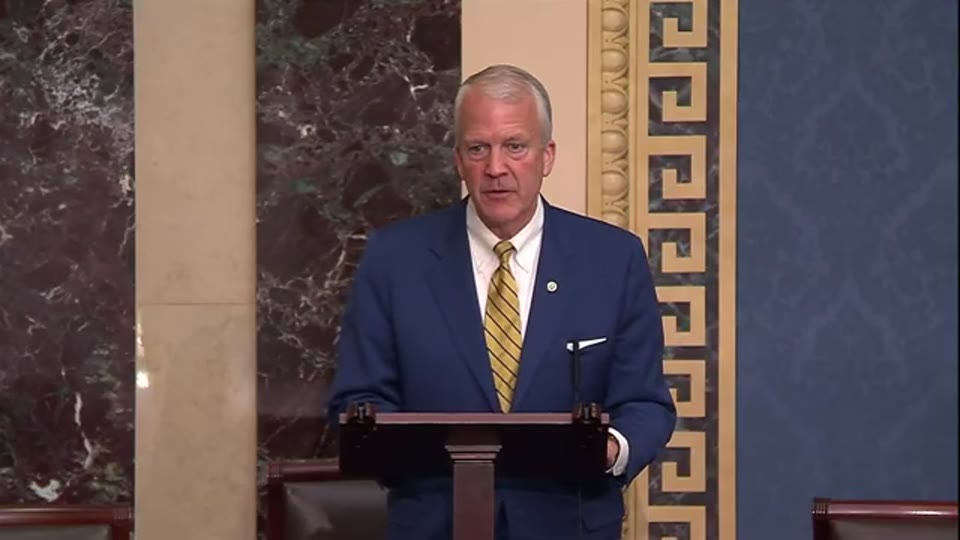
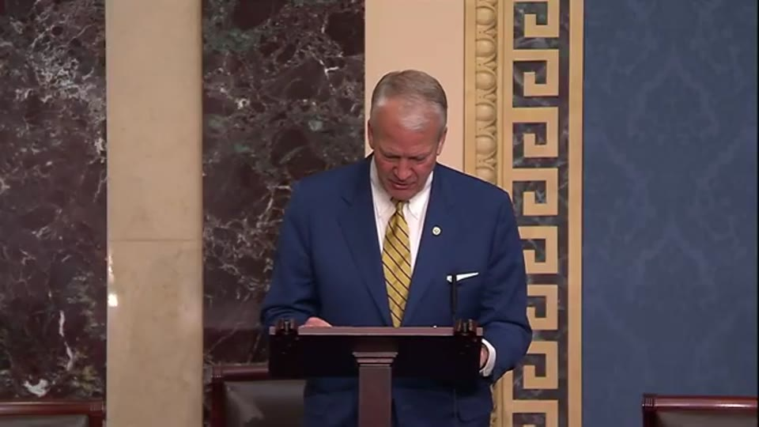
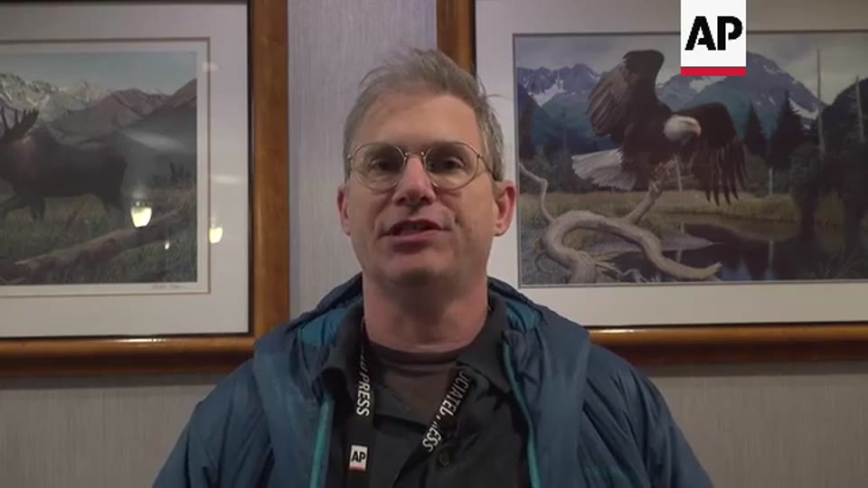
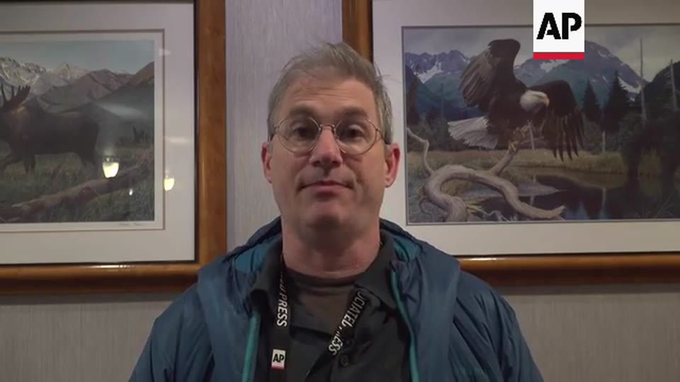
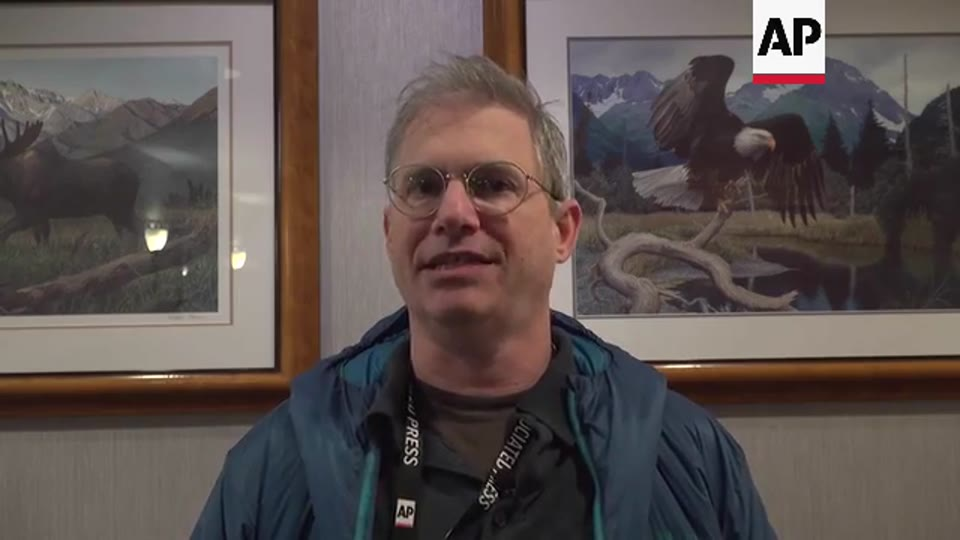
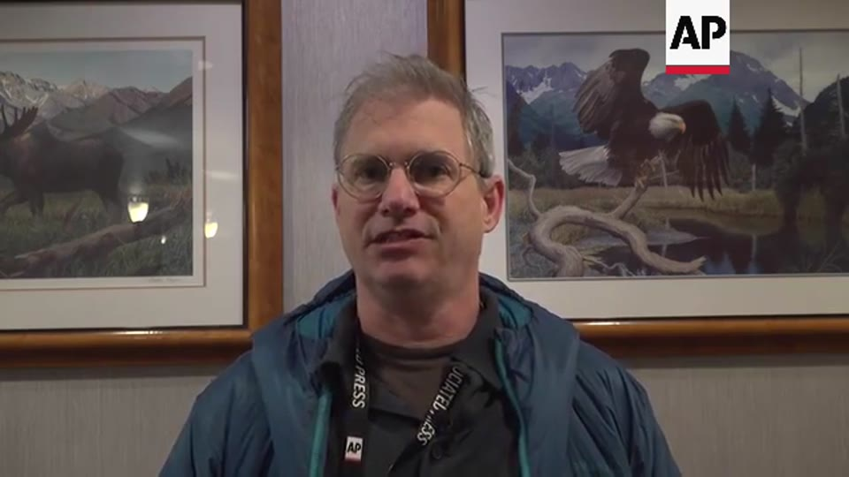

视频 / Video
视频来源 / Video sources
Sen. Dan Sullivan (R-Alaska) Speaks on Voter ID, Insider Trading Legislation - July 29, 20
Senator Dan Sullivan · 20260730 · 192s · 12/12 frames with faces
Alaska Democrat Senate candidate Peltola holds rally in Anchorage
AP Archive · 20261105 · 120s · 12/12 frames with faces
Dem Mary Peltola flips Alaska Senate seat blue, CNN projects
CNN · 20261118 · 627s · 8/8 frames with faces
关键帧与人脸识别 / Keyframes and face identity
AK_sullivan_floor




AK_peltola_rally_short



